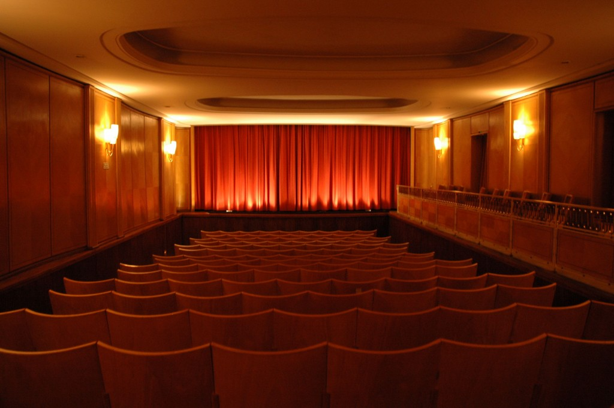

Maybe some art house stuff?
Le 13 août 1957, le cinéma Theatiner Filmkunst a ouvert ses portes. À peine un an plus tard, Marlies Kirchner prenait la direction de l'établissement, qui a été conservé dans son état d'origine jusqu'à aujourd'hui. De 1976 à 2023, elle l'a dirigé de manière autonome. En 2024, Bastian Hauser et Claire Schleeger, collaborateurs de longue date, ont repris les rênes du Theatiner Filmkunst. WALTER KIRCHNER (1923-2009) a fondé la société de distribution NEUE FILMKUNST WALTER KIRCHNER en 1953 et s'est illustré dans le domaine du cinéma international non seulement en faisant venir en Allemagne les chefs-d'œuvre de la Nouvelle Vague française, mais aussi en s'engageant pour la diffusion d'œuvres classiques alors encore largement méconnues, notamment de Buster Keaton, Serge M. Eisenstein, Dziga Vertov, Ernst Lubitsch et Alfred Hitchcock, ainsi qu’en cultivant le cinéma allemand de la République de Weimar et en ouvrant la voie aux films du modernisme classique du cinéma d’auteur européen, tels que les œuvres de Michelangelo Antonioni, Ingmar Bergman, Luis Buñuel, Federico Fellini ou Jean-Marie Straub et Danièle Huillet. Il reprit le cinéma en août 1957, un an après la construction du THEATINER FILMKUNST, et en fit un lieu inestimable d’expériences cinématographiques, qui a durablement influencé une multitude de cinéphiles et de (futurs) cinéastes. Le fait que la réalisation cinématographique ait autrefois représenté bien plus que la simple production de films grand public se voit également au fait que chaque film de la NEUE FILMKUNST bénéficiait non seulement d'une affiche spécialement conçue à cet effet (par d'éminents graphistes de l'époque tels que Hans Hillmann ou Isolde Baumgart),
Back